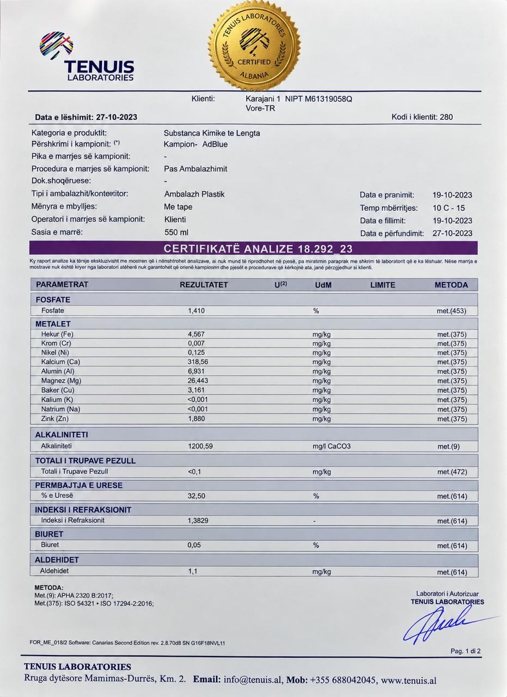

Çdo litër që shpërndajmë është e njëjta tretësirë uera e certifikuar që BASF prodhon në Gjermani - e kontrolluar në cilësi, e testuar për çdo sasi, gati për porosi në formatin që i duhet flotës suaj.
Sportel pour-it-easy, i përshtatshëm për makina, kamionë e autobusë me sistem Diesel SCR.
Njësi e instaluar shpërndarjeje, e ndërtuar për stacione karburanti, depo dhe flota të mëdha.
Uera industriale me pastërti 32.5%, e furnizuar drejtpërdrejt nga BASF.
Testim i pH, densitetit dhe stabilitetit kimik për çdo sasi.
Bidon 10L ose tank IBC 1000L, me certifikatë analize bashkëngjitur.
Dërguar nga flota jonë, në çdo cep të Shqipërisë.
Certifikata e analizës nr. 18.292_23, lëshuar nga TENUIS Laboratories (laborator i autorizuar, Shqipëri) për Karajani 1. Kampioni u pranua më 19.10.2023; përmbajtja e uresë 32.50%, indeksi i refraksionit 1.3829. Raporti i plotë shfaqet këtu siç e ka lëshuar laboratori.

Tre hapa nga gazi i shkarkimit deri te ajri i pastër.
Uera industriale 32.5%, e furnizuar ekskluzivisht nga BASF, Gjermani - pa zëvendësues, pa shkurtore.
Tanket IBC 1000L kthehen, rimbushen dhe ripërdoren, duke reduktuar mbetjet plastike një-përdorimshe për klientët e shumicës.
Dërgesa kombëtare të planifikuara me rrugë të optimizuara, duke reduktuar udhëtimet bosh kthimi dhe emetimet e flotës.